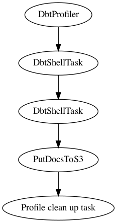

Dbt transformation and docs creation¶
Discribes a “simple” process of dbt profile file creation during run time, a dbt transformation followed by docs generation to S3 and in the end a clean up of the profile file from the container.
- class src.common.dbt_profiler.CleanUpProfile(profile_parent_path: str = None, **kwargs)¶
Deletes the generated profile file to not leave any credentials after run finished.
- Args:
profile_parent_path (str): _description_
- run(profile_parent_path: str = None)¶
The run method of the CleanUpProfile Custom Task.
- Args:
profile_parent_path (str, optional): _description_. Defaults to None.
- class src.common.dbt_profiler.DbtProfiler(profile_infos: dict = None, **kwargs)¶
This task creates a dbt profile file for you based on the connection details dictionary what you should provide.
- Args:
profile_infos: a dictionary containing all the connection infos
- run(profile_infos: dict = None)¶
Task run method. Args:
profile_infos: a dictionary containing all the connection infos
- class src.common.dbt_profiler.PutDocsToS3(project_folder: str = None, **kwargs)¶
This custom Task is uploading the generated docs into a specified S3 folder where the dbt docs would be hosted.
- Args:
project_folder (str): The name of the dbt project
- run(project_folder: str = None)¶
The actual run function of the PutDocsToS3 Custom Task.
- Args:
project_folder (str): The name of the dbt project